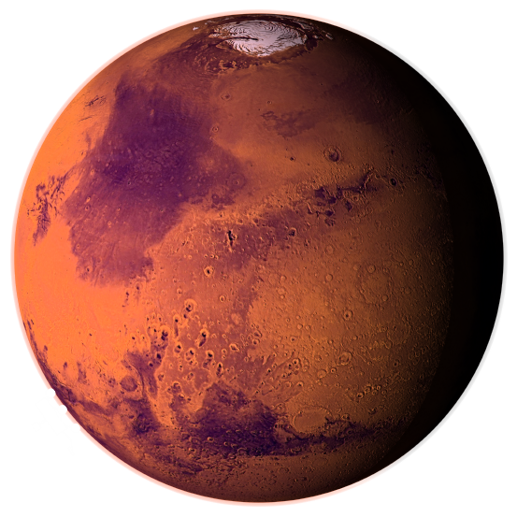

<!DOCTYPE html>

<html lang="en">

<head>
    <meta charset="UTF-8">
    <meta name="viewport" content="width=device-width, initial-scale=1.0">
    <title>Marte</title>
    <link rel="stylesheet" href="pianeta.css">
    <link rel="icon" href="immagini/SaturnArt1.png">
    <link rel="preconnect" href="https://fonts.googleapis.com">
    <link rel="preconnect" href="https://fonts.gstatic.com" crossorigin>
    <link href="https://fonts.googleapis.com/css2?family=Comfortaa:wght@300..700&family=Yellowtail&display=swap" rel="stylesheet">
</head>

</html>

<body>
    <div class="container-esterno">

        <div class="divTitolo">
            <a href="SistemaSolare.html">
                <button class="Titolo">
                    <div class="Titolo">
                        <i>Marte</i>
                    </div>
                </button>
                
            </a> 
        </div>

        <div class="paragrafo">
            Marte è il quarto pianeta dal Sole, noto come il “pianeta rosso” per il suo suolo ricco di ossido di ferro. Più piccolo della Terra, ha stagioni, calotte polari e tracce di antichi fiumi. La sua sottile atmosfera è composta soprattutto da anidride carbonica. Ospita il monte più alto e il canyon più lungo del Sistema Solare. Le missioni robotiche hanno rivelato condizioni potenzialmente favorevoli alla vita passata. Marte affascina come possibile futura meta per l’esplorazione umana.
        </div>

        <div class="divImmagine">
            <div class="DivContenitoreImmagine">
                
            </div>
            
        </div>


        <div class="divBottone">
            <a href="Home.html"><button class="bottone">Home</button></a>
        </div>

    </div>
    
</body>

</html>